Paysmallsmall Products

TWO LION DIRECT DRIVE INDUSTRIAL STRAIGHT SEWING MACHINE (TL9900D)
₦400,000

TWO LION DOMESTIC SEWING MACHINE
₦190,000
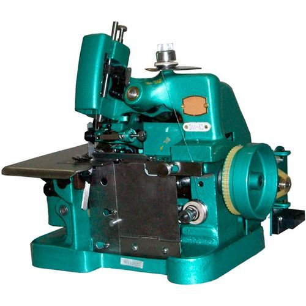
TWO LION DOMESTIC OVERLOCK MACHINE
₦170,000
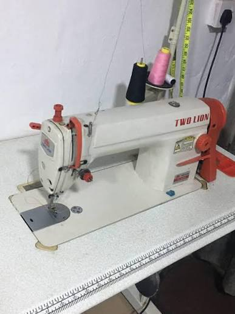
TWO LION INDUSTRIAL SEWING MACHINE
₦390,000
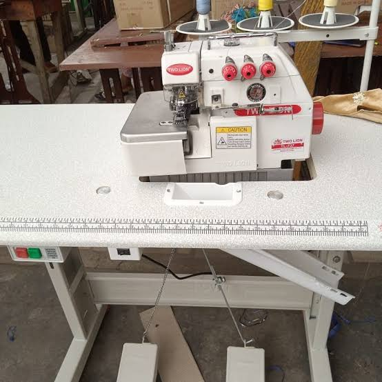
THREE THREAD INDUSTRIAL OVERLOCKING MACHINE
₦450,000
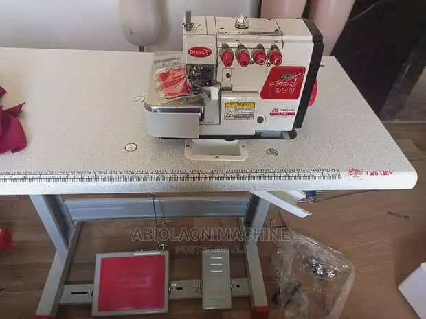
FOUR THREAD INDUSTRIAL OVERLOCKER MACHINE
₦470,000
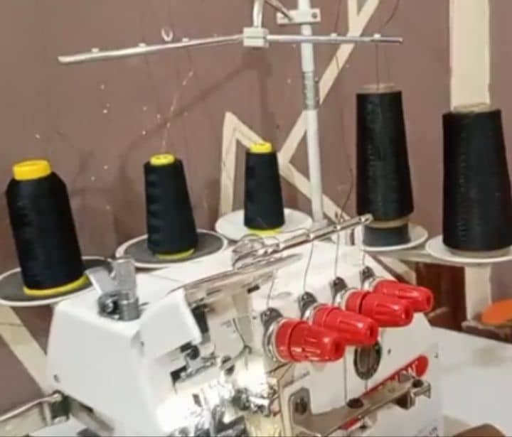
FIVE THREAD OVERLOCKER MACHINE
₦500,000
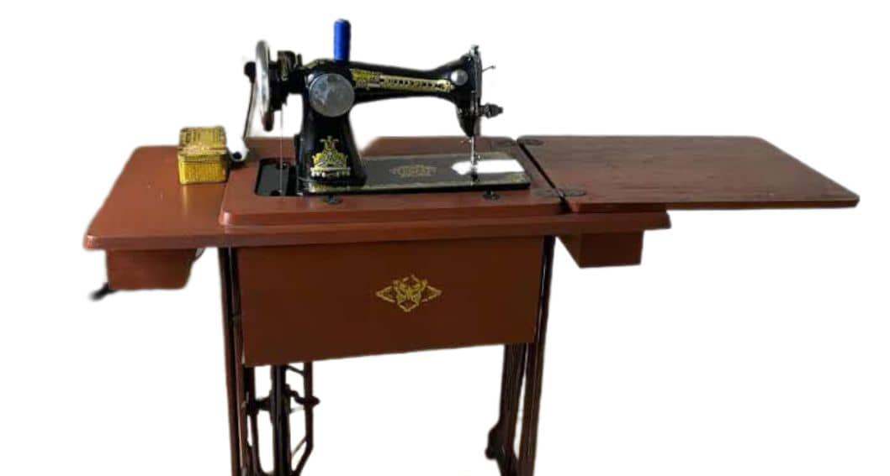
BUTTERFLY DOMESTIC SEWING MACHINE
₦230,000
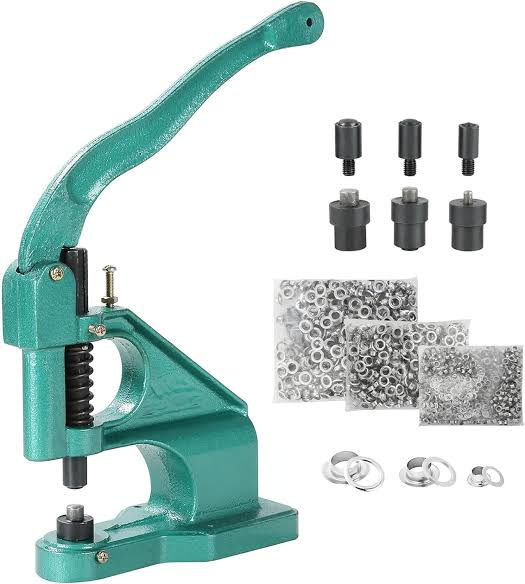
MANUAL EYELET MACHINE
₦50,000
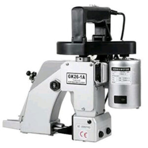
BAG CLOSER MACHINE
₦170,000
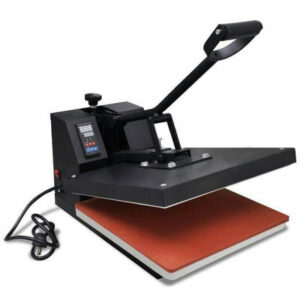
HEAT TRANSFER/PRESS MACHINE
₦350,000
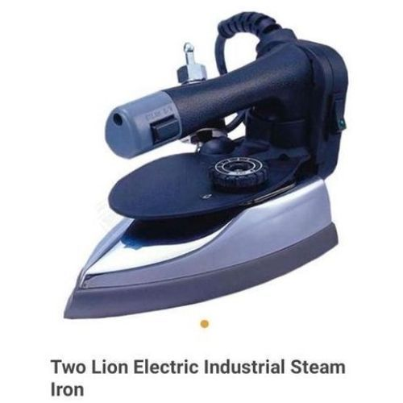
TWO LION ELECTRIC INDUSTRIAL STEAM IRON
₦95,000
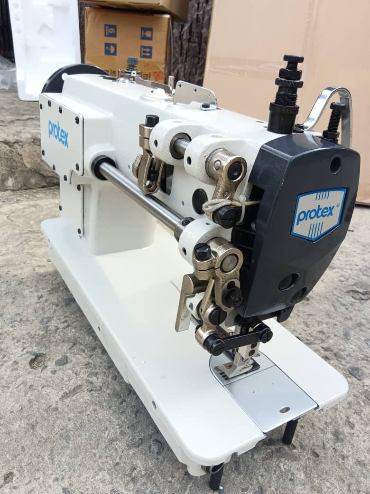
EMEL PROTEX SEWING MACHINE
₦600,000
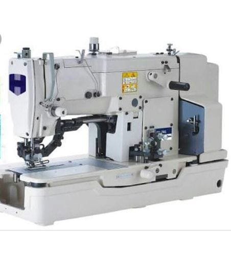
INDUSTRIAL SHIRT BUTTONHOLE MACHINE
₦2000,000
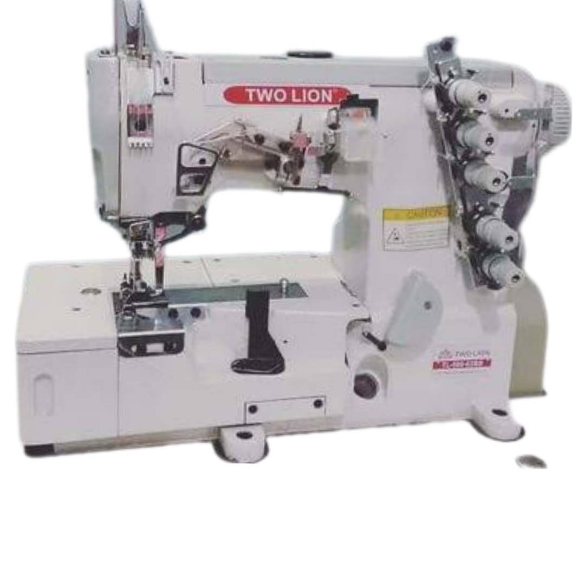
INDUSTRIAL TAPPING MACHINE
₦750,000
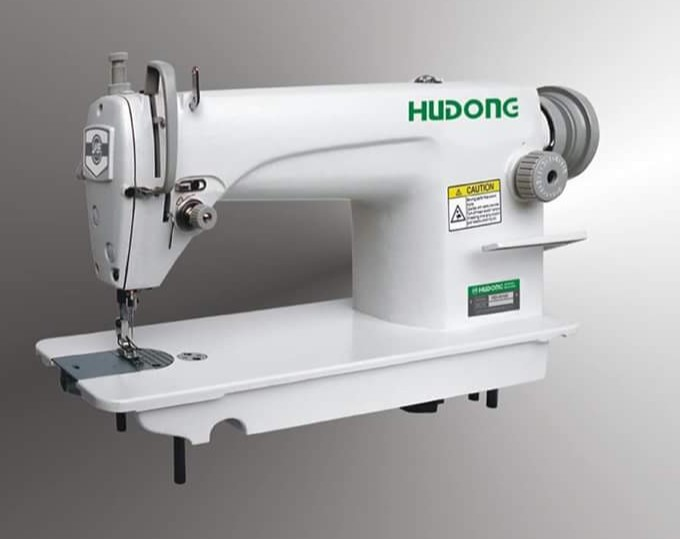
INDUSTRIAL STRIAGHT SEWING MACHINE
₦430,000
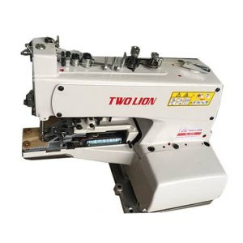
TWO LION BUTTON TACKING MACHINE
₦430,000